Create Account on GitHub
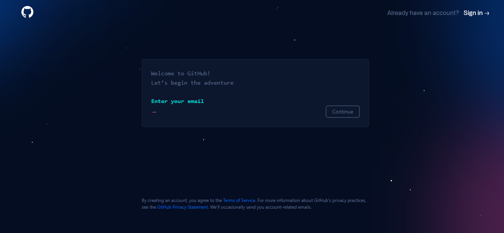
Login to your Account
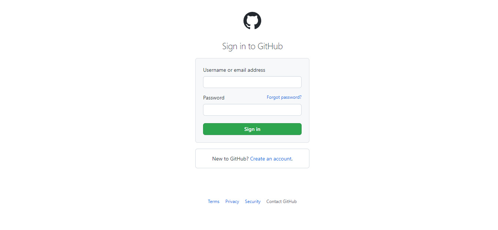
Create New Repository
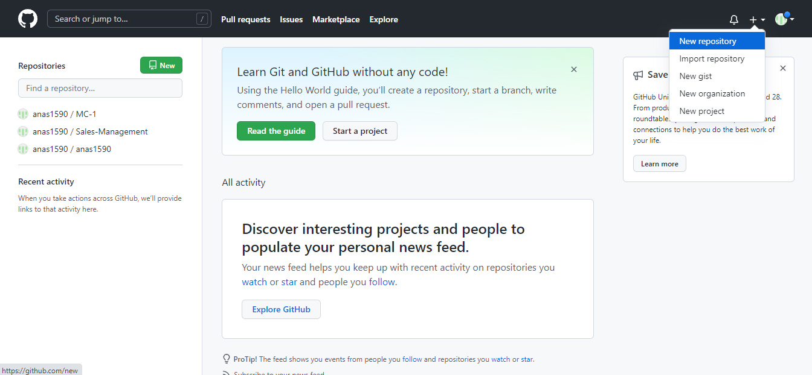
Add Repository Name, Description (Optional)
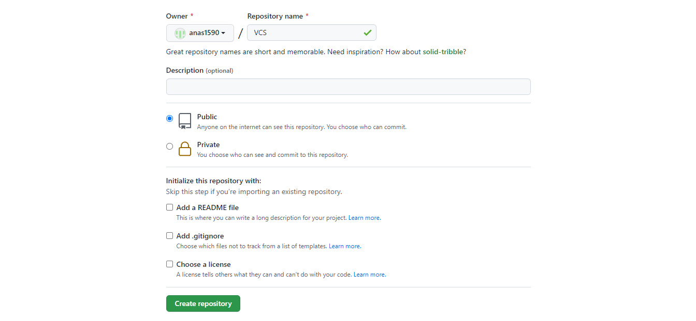
Download Git from this link Go to link
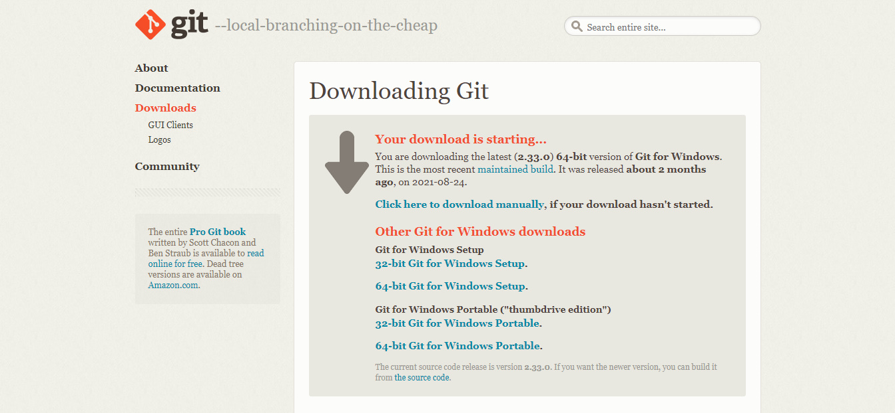
Install Git
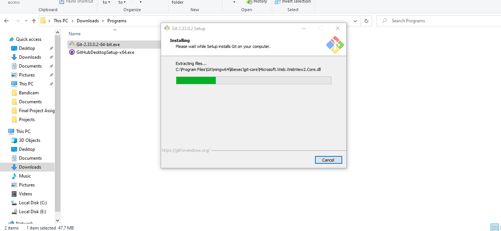
Create New Folder and Right Click to "Get Bash Here"
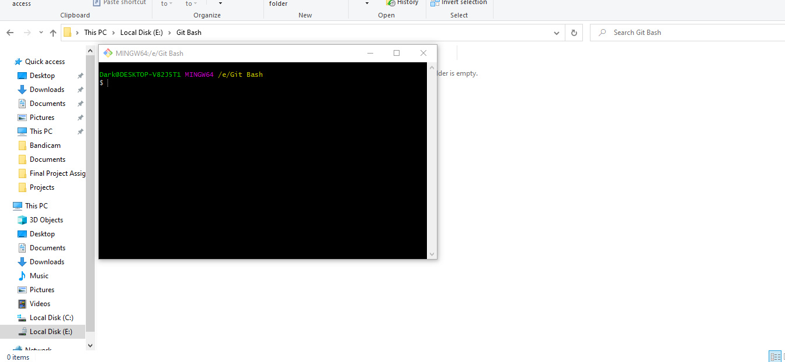
Git Bash Terminal will open then write this command "git init" and enter. This command will initiate a local in selected folder. /e/Git Bash It's showing your selected Folder.
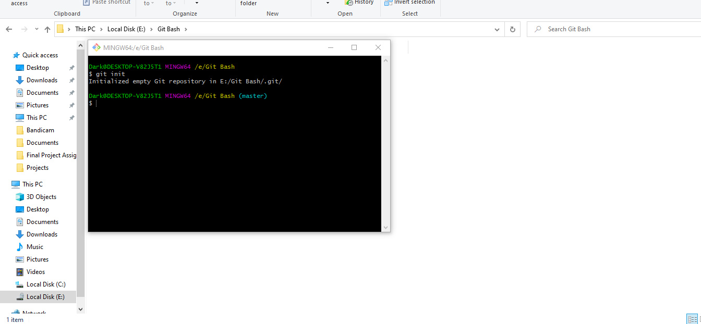
Write this command to get the status "git status"
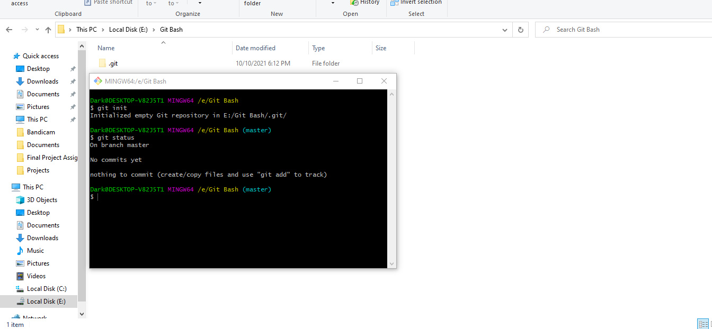
Create file here. I named it "new.html"
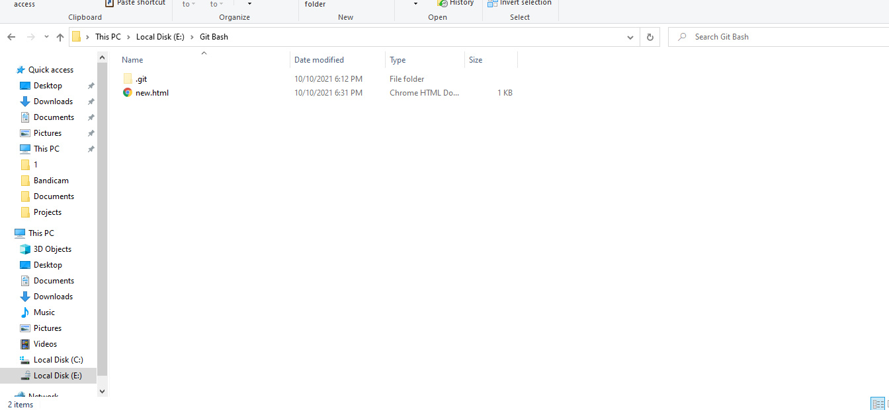
Again. Write this command to get the status of Git "git status". This time we can see "new.html" is untracked file.
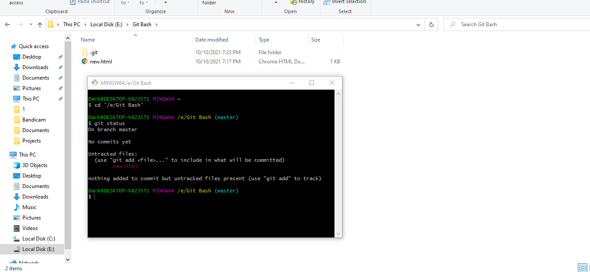
Add these untracked files by using this command "git add ."
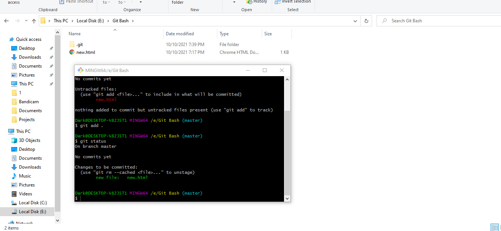
Commit changes by using this command "git commit-m message"
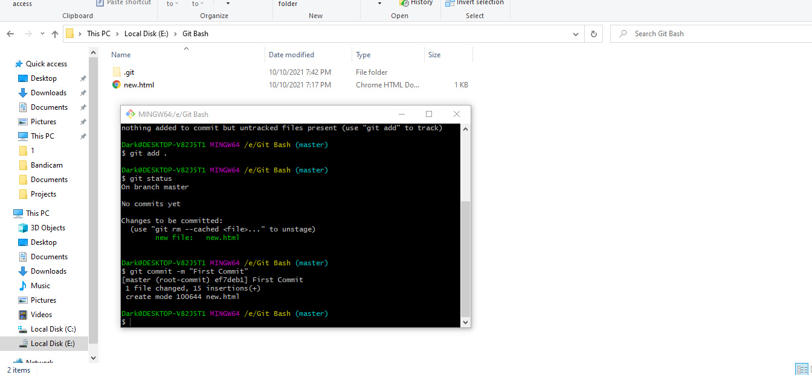
Check status again and you can see there is nothing to commit
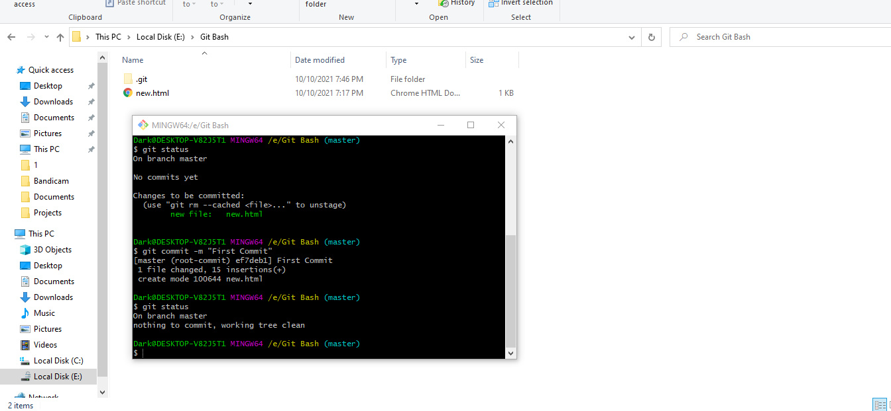
Make changes in "new.html"
Before
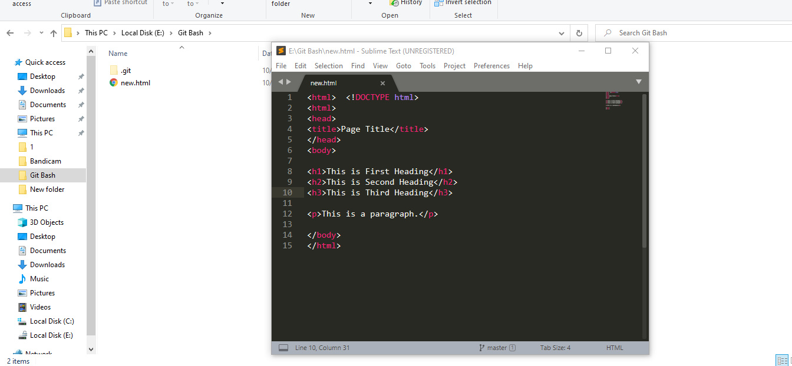
After
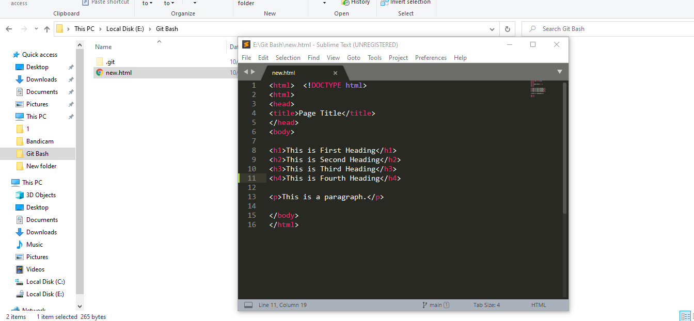
Check status again and you will know if you do any changes, it will show you all the changes in red text.
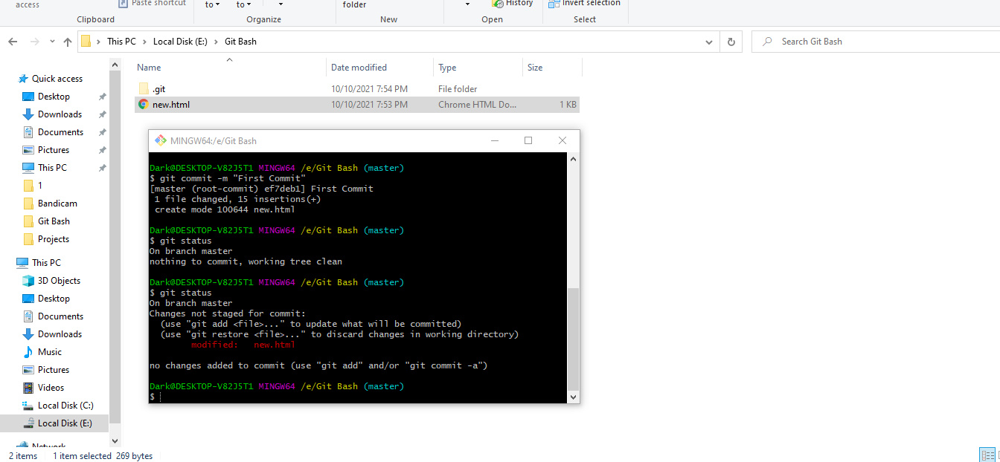
If you want to make changes, use this command "git add file" and if want to restore it, use this command "git restore file"
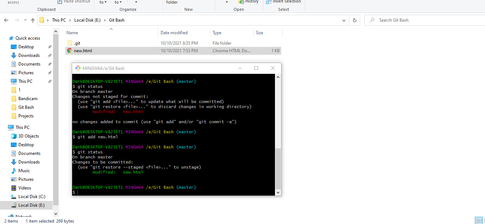
Use all these Commands:
git commit -m "first commit"
git branch -M main
git remote add origin https://github.com/anas1590/anas1590.git
git push -u origin main
To make Web Repository of Local Repository
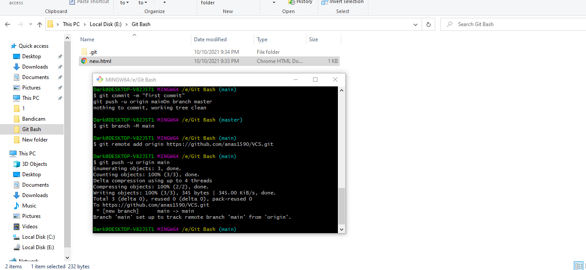
You can see all of your changes here
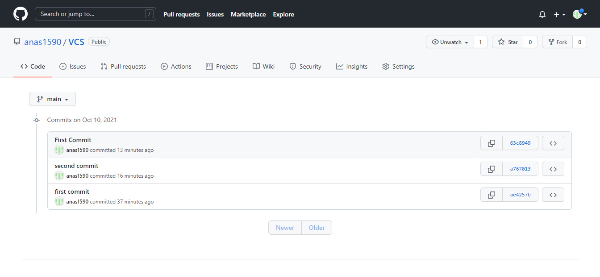
In second commit, I added green portion

In third commit, I removed red portion
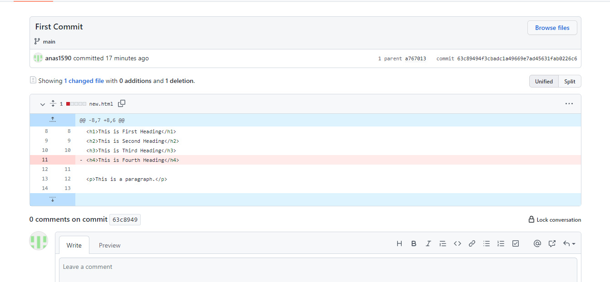
So, you can see every changes done in code